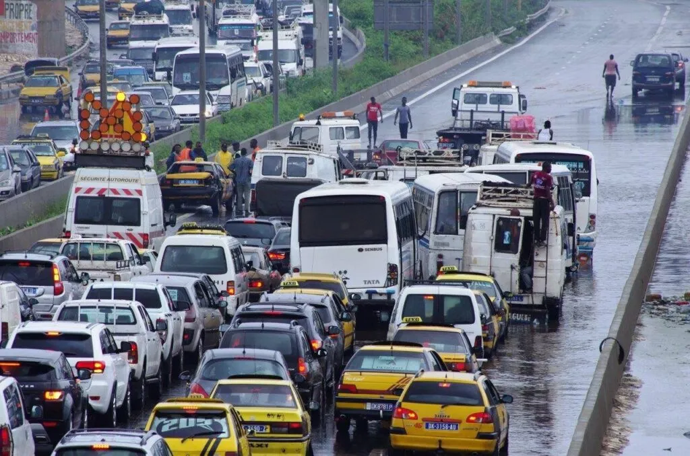
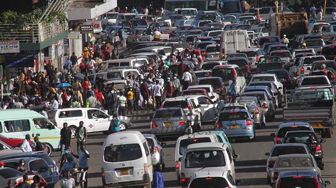
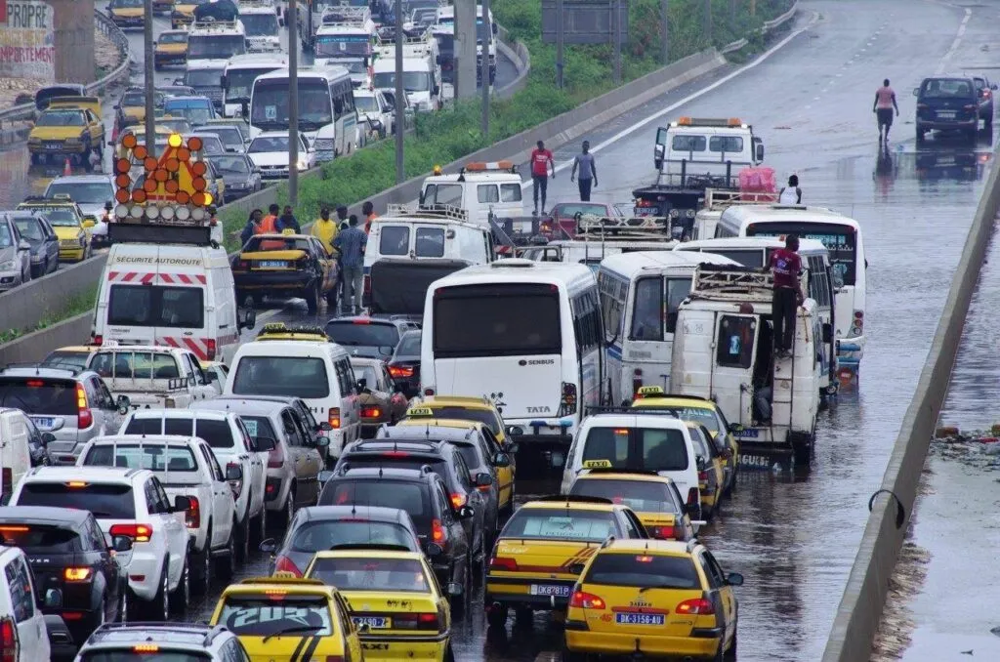
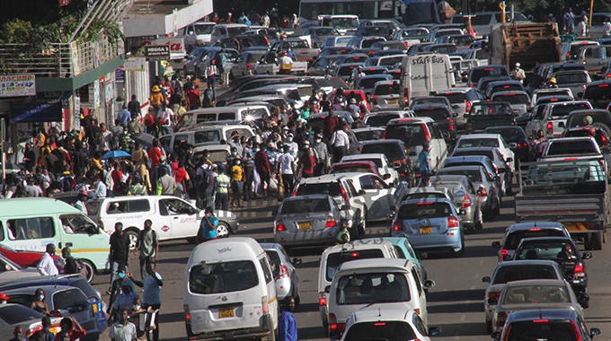

À propos
Développeur Web & Data Analyst

Étudiante sérieuse et dynamique en Licence 3 Informatique Sciences des Données à BEM TECH. Compétences en analyses statistiques, bureautique, comptabilité, logistique et gestion administrative. Polyvalente, organisée et motivée, je souhaite appliquer mes connaissances et contribuer efficacement à une équipe professionnelle.
Télécharger mon CV


 


